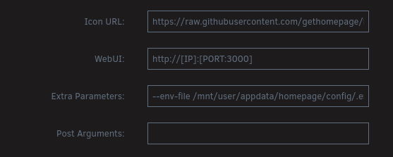

Usando HomePage. El Dashboard - 3
Un nuevo artículo hablando sobre homepage, este magnífico dashboard al que le tengo mucho cariño y que hace un tiempo realizó una actualización en su configuración y que en mi caso, usuario de portátil, no me funcionaba correctamente, porque las 5 columnas que yo utilizo no se veían correctamente. Abrí un issue sobre este problema y parece ser que con la última actualización ha solucionado este problema y ahora explicaré cómo lo he hecho.
Explicaré cómo lo tenía actualmente instalado en mi servidor unRAID y qué es lo que ahora he cambiado y me lo apunto por si en algún futuro lo necesito y nunca se sabe, a lo mejor os puede servir de ayuda.
Lo primero es la instalación que yo tenía en unRAID. Yo lo tenía a través del plugin compose, pero cada vez que se reiniciaba el servidor, aunque son pocas veces, homepage dejaba de funcionar y tenía que detener el contenedor y luego volverlo a iniciar.
Pero claro, llega un momento que te cansas de estar así y te pones a solucionar este problema y hoy ha sido ese día.
Lo que he hecho ha sido usar la tienda de unRAID para instalar homepage, pero eso sí, usando la configuración que estaba usando actualmente. Pero no todo iba a ser tan bonito de funcionar a la primera.
Cuando me iba a la IP de homepage me salía un error donde me indicaba que revisase el log y me aparecía el siguiente mensaje de error:
[2025-03-14T19:25:15.419Z] error: Host validation failed for: 192.0.0.40:2000. Hint: Set the HOMEPAGE_ALLOWED_HOSTS environment variable to allow requests from this host.
[2025-03-14T19:25:15.424Z] error: Host validation failed for: 192.0.0.40:2000. Hint: Set the HOMEPAGE_ALLOWED_HOSTS environment variable to allow requests from this host.
[2025-03-14T19:25:15.428Z] error: Host validation failed for: 192.0.0.40:2000. Hint: Set the HOMEPAGE_ALLOWED_HOSTS environment variable to allow requests from this host.
[2025-03-14T19:25:15.433Z] error: Host validation failed for: 192.0.0.40:2000. Hint: Set the HOMEPAGE_ALLOWED_HOSTS environment variable to allow requests from this host.
[2025-03-14T19:25:15.455Z] error: Host validation failed for: 192.0.0.40:2000. Hint: Set the HOMEPAGE_ALLOWED_HOSTS environment variable to allow requests from this host.
Anteriormente este error no me daba, hasta que me he dado cuenta de que en el docker-compose.yml tenía puesto lo siguiente:
services:
homepage:
#image: ghcr.io/gethomepage/homepage:v0.10.9
image: ghcr.io/gethomepage/homepage:latest
container_name: homepage
restart: always
ports:
- "2000:3000"
volumes:
- /mnt/user/appdata/homepage/config:/app/config
- /mnt/user/appdata/homepage/icons:/app/public/icons
- /var/run/docker.sock:/var/run/docker.sock:ro
environment:
# ES LA OPCIÓN PROBLEMÁTICA
- HOMEPAGE_ALLOWED_HOSTS=192.0.0.1:2000
env_file:
- .env
healthcheck:
disable: false
Pero claro, aquí lo tenía así, pero en el caso de querer hacerlo mediante la aplicación de unRAID, ¿cómo se tiene que hacer? Además en homepage, como sabéis, hay unas variables para pasar parámetros a las opciones que pueden estar normalmente en un archivo .env, pero claro, ¿cómo se hace para pasar este fichero a homepage?
De nuevo, a buscar más información. Si os dais cuenta, he empezado por una cosa y aún no he acabado y tengo más problemas, pero vayamos por partes 😀. Lo primero es lo primero, y esto es conseguir pasar el archivo .env a homepage y esto al final, después de buscar en unRAID, se hace de la siguiente manera.
Cuando instalas la aplicación, se tiene que activar la opción expert que te da más opciones que modificar. Una vez la tienes activada, tienes que ir a la opción Extra Parameters y añadir lo siguiente:

He iniciamos la aplicación. Pero en mi caso seguía apareciendo el mensaje y eso que había añadido la variable HOMEPAGE_ALLOWED_HOSTS con la IP de servidor y el puerto. Esto se tiene que hacer siempre que no uses el puerto por defecto (3000). Pues nada, a seguir investigando.
Al final he encontrado la solución, que es añadir en la plantilla de homepage esta opción de la siguiente manera:
Se puede ver que tanto el identificador de la variable como la variable en sí, yo les he puesto el mismo nombre, HOMEPAGE_ALLOWED_HOSTS y como valor, la IP de mi servidor y de nuevo a reiniciar el contenedor. Pero esta vez hemos tenido suerte y homepage ha empezado a funcionar perfectamente y con la configuración que tenía anteriormente.
Lo único malo es que tengo algunos iconos descargados porque no los tiene implementados este dashboard. Así que tenía que buscar la manera de suplir lo que tenía antes con el nuevo funcionamiento. He probado de todo:
- Modificar el fichero de configuración por si era un problema del path.
- Copiar los iconos junto al fichero de configuración.
- Copiar el directorio de iconos dentro del directorio de configuración.
- etc…
Pero no había manera de que nada hiciera que se visualizaran los iconos que tenía, hasta que al final he revisado cómo estaba el árbol de directorios de homepage dentro del contenedor y he visto lo siguiente:
app/
├── config/ # directorio con los ficheros de configuración
├── public/
│ ├── locales/
│ ├── favicon.ico
│ └── favicon-16x16.png
└── src/
Entonces he copiado los iconos aquí dentro y todo ha funcionado correctamente, pero claro, en el caso de detener el contenedor los iconos se perderán porque no se guardan y al final he utilizado la magia de docker y los volúmenes. He creado el directorio /public/icons, pero icons está en el host y esto lo he hecho a través de un nuevo path que se añade en la plantilla de configuración de la siguiente manera:
Y con esto tengo acceso al directorio public donde tengo los iconos pero sin perderlos. Ya tenemos a la vista la meta de esta nueva instalación de homepage mediante la tienda de aplicaciones de unRAID.
Asimismo, la otra cosa que también me traía de cabeza es que en el widget de PiHole no podía ver ninguna información, porque el código de API me ha cambiado. Es un tema que siempre me ha llevado de cabeza y no soy el [único](Pihole V6 widget API authentication error) que tiene este problema.
Al final me he puesto con ello, buscando información de cómo se tiene que hacer correctamente. Había encontrado este vídeo donde explica cómo se tiene que hacer, pero es un poco antiguo, porque en este sentido, PiHole ha cambiado su manera de obtener el código de API.
Pero al final, después de mucho buscar, he encontrado la manera de conseguir la API de PiHole. En principio la cosa es fácil, pero si no lo encuentras o esconden esta opción, pues…
Todo se basa en que tienes que ir al GUI de PiHole y:
-
Accedes a System -> Settings -> Web Interface/Api
-
Una vez hecho esto, activas la opción Expert
-
Le das a Configure app password y copias el password que te aparece medianamente camuflado y aceptas.
- No te asustes porque una vez hecho esto, te saca de la aplicación.
-
Copias este password en el fichero de variables
.envjunto con la variable HOMEPAGE_VAR_PIHOLE. -
Recuerda que en el fichero de los servicios de homepage, cuando defines la sección de PiHole también tienes que poner el nombre de la variable en Key:
- PiHole:
icon: pi-hole.png
# IP DEL SERVIDOR PIHOLE
href: http://192.0.0.3/admin/login
description: Servidor PiHole
siteMonitor: http://192.0.0.3
container: pihole
widget:
type: pihole
# IMPORTANT SI ESTEU A LA VERSIO 6
version: 6
url: http://192.0.0.3
key: {{HOMEPAGE_VAR_PIHOLE}}
Ahora solo falta reiniciar el contenedor de homepage y todo volverá a funcionar correctamente y como siempre tendría que haber funcionado, pero por desidia, nunca me había puesto.